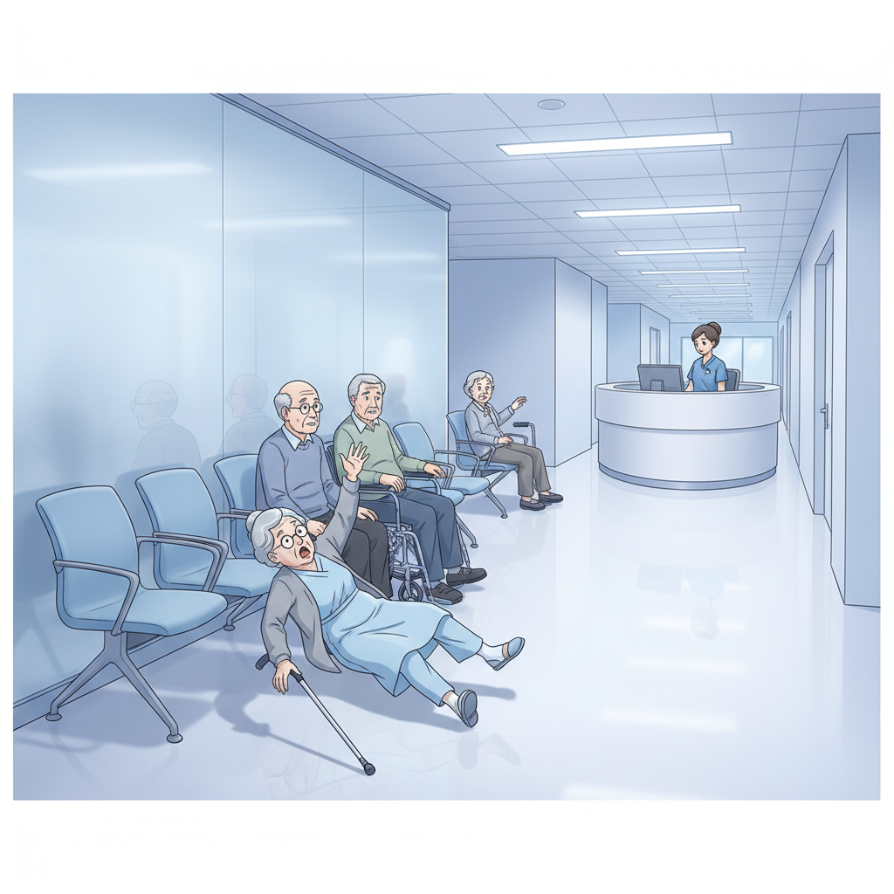
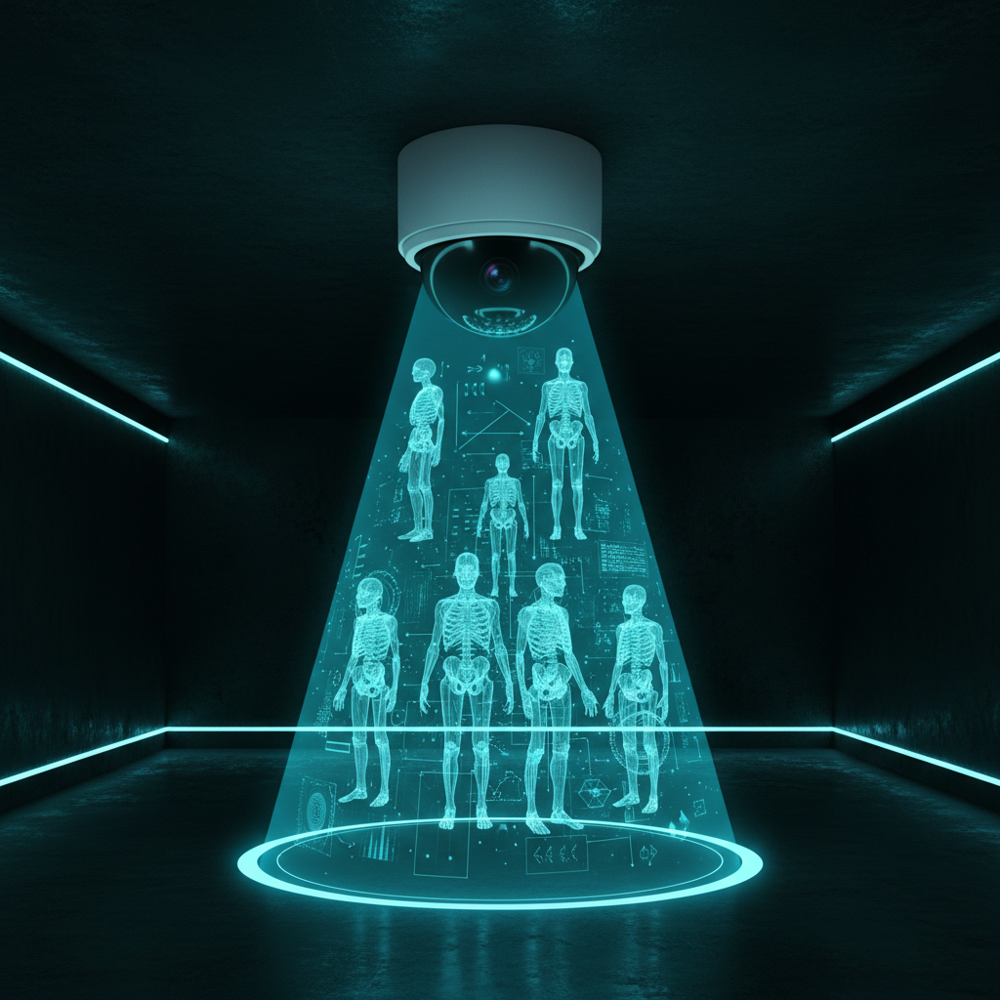
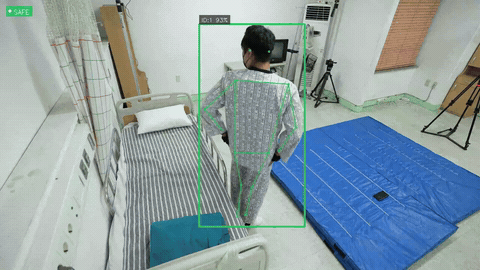
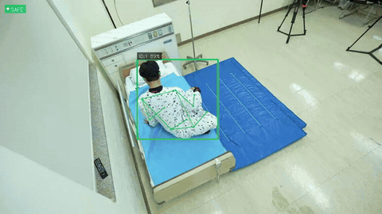
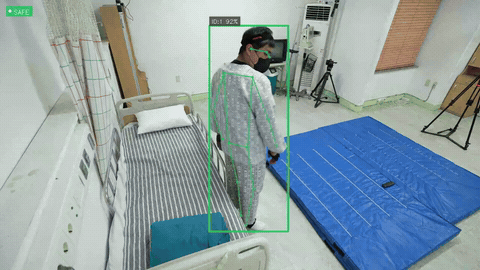
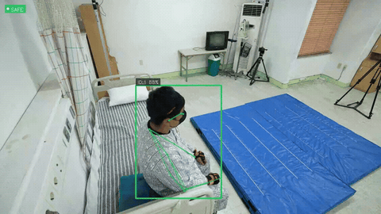
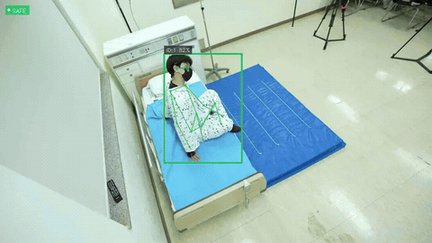
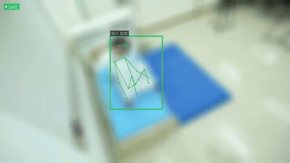

"매년 노인 3명 중 1명이 넘어집니다"
Sense · Protect · Care
기존 CCTV에 AI를 연결하면, 환자가 넘어지는 순간 즉시 알려줍니다

기존 CCTV를 활용한 AI 기반 실시간 낙상 감지 시스템

추가 장비 없이 기존 카메라 연결. 초기 비용 최소화
넘어지는 순간 포착, 3초 안에 자동 알림 전송
관절 좌표만 분석, 개인정보 유출 원천 차단
대기실 내 모든 환자를 개별 식별하여 추적
YOLO11 AI 분석 결과 — 초록 박스가 빨간 박스로 바뀌면 낙상 감지




AI는 어떻게 낙상을 판별하나?


대시보드에서 모든 카메라 한눈에 확인
낙상 발생 시 화면 경고 + 음성 알림
낙상 이벤트 통계 리포트
안전 관리 증빙 자료로 활용
| 비교 항목 | 기존 CCTV | 레이더 센서 (Vayyar Care) |
SENTIO AI |
|---|---|---|---|
| 낙상 감지 | 사람이 직접 확인 | 레이더 신호 분석 | AI 자동 감지 (YOLO11+GRU) |
| 추가 장비 | - | 전용 레이더 설치 (방당 50만+) | 0원 (기존 인프라) |
| 프라이버시 | 영상 녹화 저장 | 영상 없음 | 스켈레톤 좌표만 처리 |
| 다인 추적 | 불가 | 불가 | 동시 N명 개별 추적 |
| 전용 GPU | - | 불필요 | 선택적 (일반 PC 가능) |
| 구분 | SENTIO | 타 연구 |
|---|---|---|
| 검증 영상 | 424개 | 80개 이하 |
| 핵심 지표 | F1 94.9 | Accuracy 기준* |
| 다인 추적 | ByteTrack | 미지원 |
요양병원 1,900곳 + 시설 5,800곳 의무화
재활 환자 모니터링, 대기실 안전
고령자 180만명 B2G
감사합니다
요양병원 실시간 모니터링의 골든타임, AI가 지킵니다.
20건 중 19건 감지 오알림 5% 미만 프라이버시 보호